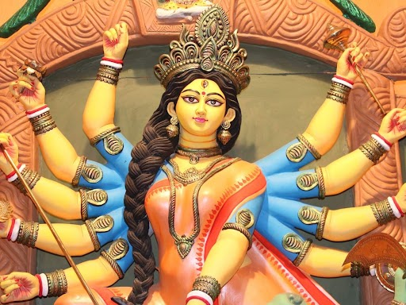
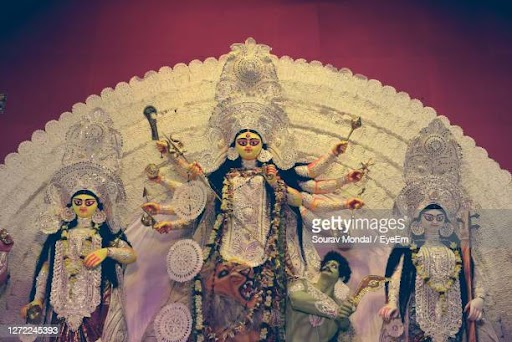
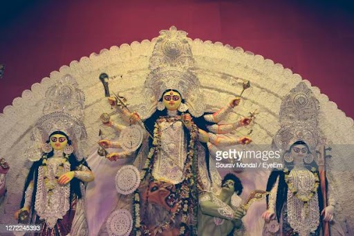

Durga Puja Celebration
Durga Puja is a Hindu festival celebration of the Mother Goddess and the victory of the warrior Goddess Durga over the demon Mahisasura. The festival represents female power as ‘Shakti’ in the Universe. It is a festival of Good over Evil. Durga Puja is one of the greatest festivals of India. In addition to being a festival for the Hindus, it is also time for a reunion of family and friends, and a ceremony of cultural values and customs.

While the ceremonies bring observance of fast and devotion for ten days which starts from Mahalaya which begins the festival , the last four days of the festival namely Saptami, Ashtami, Navami, and Vijaya-Dashami are celebrated with much sparkle and magnificence in India, especially in Bengal and overseas.
 The Durga Puja celebrations differ based on the place, customs, and beliefs. Things differ to the extent that somewhere the festival is on for five days, somewhere it is for seven and somewhere it is for complete ten days. Joviality begins with ‘Shashti’ – sixth day and ends on the ‘Vijaya Dashmi’ – the tenth day.
Goddess Durga was the daughter of Himalaya and Menka. She later became Sati to get married to Lord Shiva. It is believed that the festival of Durga puja started since the time Lord Rama worshipped the goddess to get a grant of powers from her to kill Ravana.
Some communities, especially in Bengal the festival is celebrated by decorating a ‘pandal’ in the close regions. Some people even worship the goddess at home by making all the arrangements. On the last day, they also go for immersing the statue of the goddess into the holy river the Ganges.
We celebrate Durga Puja to honor the victory of good over evil or light over darkness. Some believe another story behind this festival is that on this day the goddess Durga defeated the demon Mahisasura. She was called upon by the all Lords – Shiva, Brahma, Vishnu , Indra and all gods to eradicate the demon and save the world from his cruelty. The gods gave her different weapons to kill demon Mahisasura . Lord Shiva gave her Trident(Trishul), Vishnu gave her Sudarshan Chakra, Indra gave her Vajra, Vishwakarma gave her Battle Axe , Varun gave her Conch , Vayu gave Bow , Surya gave Arrow, Kal gave her Kharga(sword), she also carries a Shield, Dharmaraj gave a sword and Himalaya gave her a Lion as Vahana . The battle went on for ten days and finally, on the tenth day, Goddess Durga eliminated the demon. We celebrate the tenth day as Dussehra or Vijayadashami.

The festivities begin from the time of Mahalaya, where the devotees request Goddess Durga to come to the earth. On this day, they make the eyes on the statue of the Goddess during an auspicious ceremony named Chokkhu Daan. After establishing the idol of Goddess Durga in place, they perform rituals to raise her blessed presence into the idols on Saptami.
These rituals are called ‘Pran Pratisthan’. It consists of a small banana plant known a Kola Bou (banana bride), which is taken for a bath in a nearby river or lake, outfitted in a sari, and is used as a way for carrying the Goddess’s holy energy.
During the festival, the devotees offer prayers to the Goddess and worshiped her in several different forms. After the evening aarti ritual is done on the eighth day it is a tradition for the religious folk dance which is performed in front of the Goddess in order to gratify her. This dance is performed on the musical beats of drums while holding a clay pot filled with burning coconut covering and camphor.
On the ninth day, the worship is completed with a Maha Aarti. It is symbolic of the ending of the major rituals and prayers. On the last day of the festival, Goddess Durga goes back to her husband’s dwelling and the goddess Durga’s statutes are taken for immersion in the river. The married women offer red vermillion powder to the Goddess and mark themselves with this powder.
All people celebrate and enjoy this festival irrespective of their castes and financial status. Durga Puja is an enormously communal and theatrical celebration. Dance and cultural performances are an essential part of it. Delicious traditional food is also an enormous part of the festival. The street of Kolkata flourishes with food stalls and shops, where several locals and foreigners enjoy mouth-watering foodstuff including sweets. To celebrate Durga Puja, all workplaces, educational institutions, and business places remain closed in West Bengal. Besides Kolkata, Durga Puja is also celebrated in other places like Patna, Guwahati, Mumbai, Jamshedpur, Bhubaneswar, and so on. Many non-residential Bengali cultural establishments organize Durga Puja in several places in the UK, USA, Australia, France, and other countries. Thus, the festival teaches us that good always wins over the evil and so we should always follow the right path.
The Durga Puja celebrations differ based on the place, customs, and beliefs. Things differ to the extent that somewhere the festival is on for five days, somewhere it is for seven and somewhere it is for complete ten days. Joviality begins with ‘Shashti’ – sixth day and ends on the ‘Vijaya Dashmi’ – the tenth day.
Goddess Durga was the daughter of Himalaya and Menka. She later became Sati to get married to Lord Shiva. It is believed that the festival of Durga puja started since the time Lord Rama worshipped the goddess to get a grant of powers from her to kill Ravana.
Some communities, especially in Bengal the festival is celebrated by decorating a ‘pandal’ in the close regions. Some people even worship the goddess at home by making all the arrangements. On the last day, they also go for immersing the statue of the goddess into the holy river the Ganges.
We celebrate Durga Puja to honor the victory of good over evil or light over darkness. Some believe another story behind this festival is that on this day the goddess Durga defeated the demon Mahisasura. She was called upon by the all Lords – Shiva, Brahma, Vishnu , Indra and all gods to eradicate the demon and save the world from his cruelty. The gods gave her different weapons to kill demon Mahisasura . Lord Shiva gave her Trident(Trishul), Vishnu gave her Sudarshan Chakra, Indra gave her Vajra, Vishwakarma gave her Battle Axe , Varun gave her Conch , Vayu gave Bow , Surya gave Arrow, Kal gave her Kharga(sword), she also carries a Shield, Dharmaraj gave a sword and Himalaya gave her a Lion as Vahana . The battle went on for ten days and finally, on the tenth day, Goddess Durga eliminated the demon. We celebrate the tenth day as Dussehra or Vijayadashami.

The festivities begin from the time of Mahalaya, where the devotees request Goddess Durga to come to the earth. On this day, they make the eyes on the statue of the Goddess during an auspicious ceremony named Chokkhu Daan. After establishing the idol of Goddess Durga in place, they perform rituals to raise her blessed presence into the idols on Saptami.
These rituals are called ‘Pran Pratisthan’. It consists of a small banana plant known a Kola Bou (banana bride), which is taken for a bath in a nearby river or lake, outfitted in a sari, and is used as a way for carrying the Goddess’s holy energy.
During the festival, the devotees offer prayers to the Goddess and worshiped her in several different forms. After the evening aarti ritual is done on the eighth day it is a tradition for the religious folk dance which is performed in front of the Goddess in order to gratify her. This dance is performed on the musical beats of drums while holding a clay pot filled with burning coconut covering and camphor.
On the ninth day, the worship is completed with a Maha Aarti. It is symbolic of the ending of the major rituals and prayers. On the last day of the festival, Goddess Durga goes back to her husband’s dwelling and the goddess Durga’s statutes are taken for immersion in the river. The married women offer red vermillion powder to the Goddess and mark themselves with this powder.
All people celebrate and enjoy this festival irrespective of their castes and financial status. Durga Puja is an enormously communal and theatrical celebration. Dance and cultural performances are an essential part of it. Delicious traditional food is also an enormous part of the festival. The street of Kolkata flourishes with food stalls and shops, where several locals and foreigners enjoy mouth-watering foodstuff including sweets. To celebrate Durga Puja, all workplaces, educational institutions, and business places remain closed in West Bengal. Besides Kolkata, Durga Puja is also celebrated in other places like Patna, Guwahati, Mumbai, Jamshedpur, Bhubaneswar, and so on. Many non-residential Bengali cultural establishments organize Durga Puja in several places in the UK, USA, Australia, France, and other countries. Thus, the festival teaches us that good always wins over the evil and so we should always follow the right path.